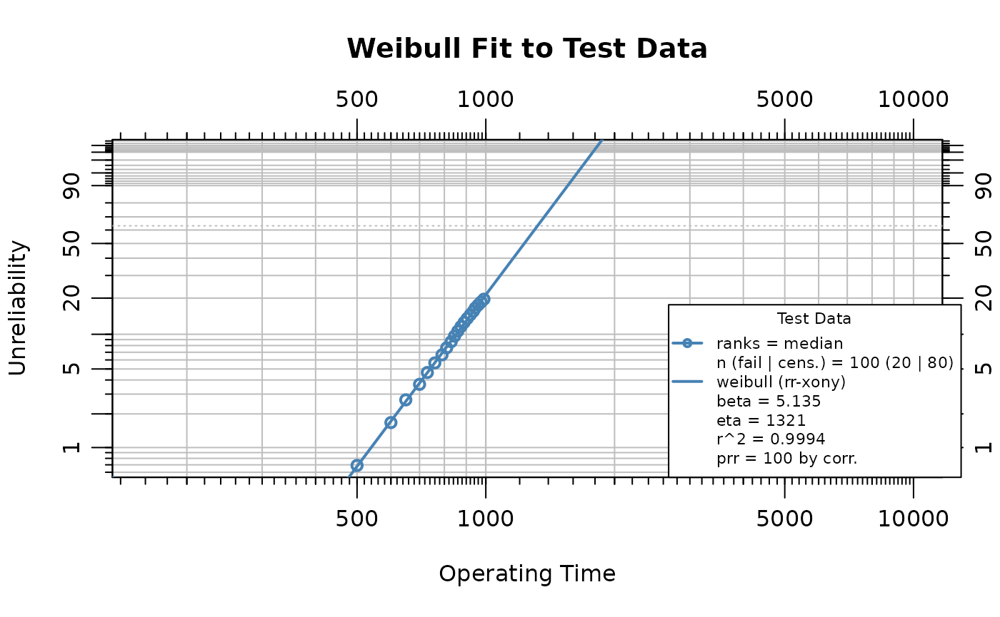
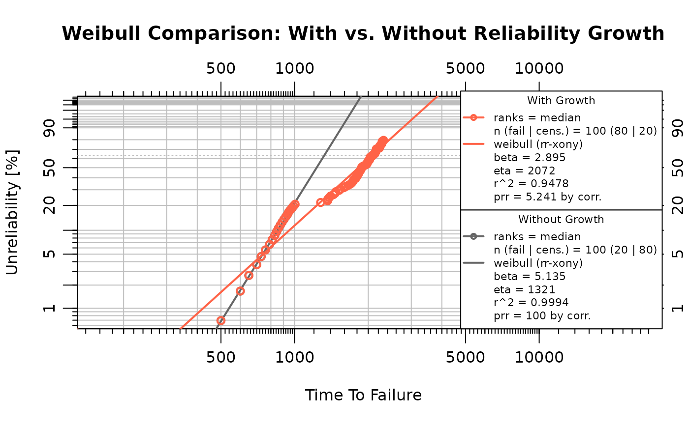
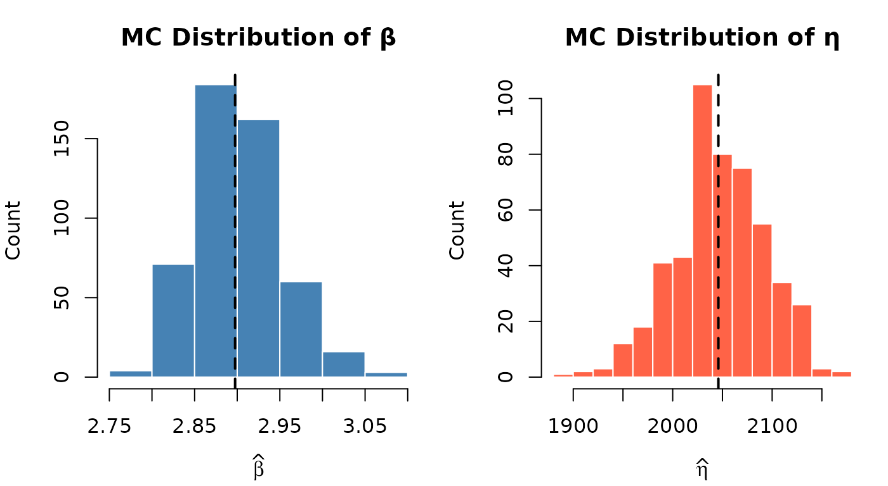
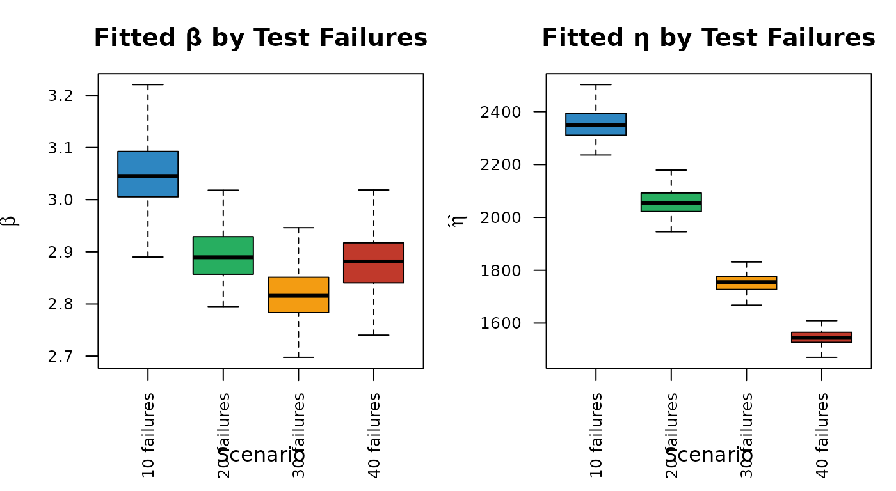
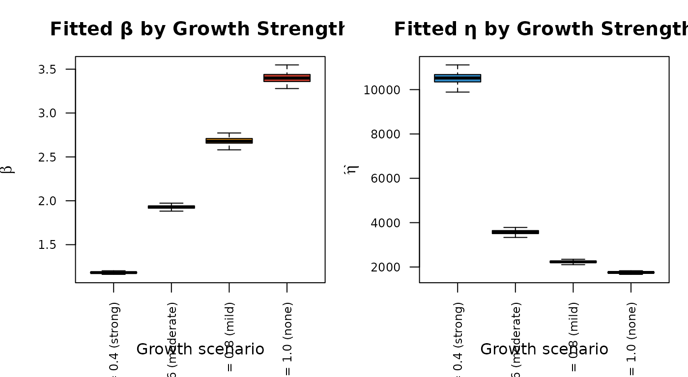

# Prefer the local source checkout when knitting from the package repo.
pkg_root <- NULL
if (requireNamespace("pkgload", quietly = TRUE)) {
candidate_roots <- c(".", "..")
for (path in candidate_roots) {
desc_path <- file.path(path, "DESCRIPTION")
if (!file.exists(desc_path)) {
next
}
pkg_name <- tryCatch(
as.character(read.dcf(desc_path, fields = "Package")[1, 1]),
error = function(e) ""
)
if (identical(pkg_name, "ReliaGrowR")) {
pkg_root <- normalizePath(path, winslash = "/", mustWork = TRUE)
break
}
}
}
if (!is.null(pkg_root)) {
pkgload::load_all(
pkg_root,
export_all = FALSE,
helpers = FALSE,
attach_testthat = FALSE,
quiet = TRUE
)
} else {
library(ReliaGrowR)
}
library(WeibullR)Introduction
Reliability Growth Analysis (RGA) tracks the improvement (or degradation) of system reliability over a test campaign as changes are made. However, translating an observed growth trend into a fleet-level life distribution forecast requires several additional steps that are often performed separately, leading to potential inconsistencies, loss of fidelity in reliability projections, and an incomplete picture of future system performance. This study introduces a novel integrated workflow that systematically connects RGA to Weibull life estimation through stochastic simulation, providing a robust framework to propagate observed reliability growth into predictive fleet-level life distributions. The RGA forecast determines the cumulative time over which a target number of additional failures is expected, sim_failures() generates conditional failure times for the surviving units over that horizon, and the simulated failures are combined with observed test data to fit a growth-adjusted Weibull distribution, offering a dynamic and data-driven representation of reliability that evolves with observed improvements. This integration provides a more comprehensive and realistic fleet-level life distribution forecast by explicitly accounting for reliability improvements, thereby avoiding underestimation of future reliability or misallocation of resources often associated with fragmented analyses. A parallel Weibull fit to the test data alone (without growth) provides a baseline for the comparison. Monte Carlo replication quantifies the variability introduced by the simulation, and sensitivity analyses examine how the results depend on the number of test failures and the strength of the reliability growth trend.
Life Data Analysis
Suppose a reliability test is conducted on 100 units over a 1000 time-unit campaign, during which 20 failures occur. The failure mechanism is wear-out (>1), so the hazard rate increases with age. During the test, design improvements were introduced to mitigate the wear-out mechanism, producing a reliability growth trend in the system-level failure intensity. Eighty surviving units remained at risk during the forecast period. The failure and suspension times were as follows:
failures <- c(
500, 600, 650, 700, 730, 760, 790, 810, 830, 845,
860, 875, 890, 905, 920, 935, 945, 960, 975, 990
)
suspensions <- rep(1000, 80)
n_test_failures <- length(failures)
n_surviving <- length(suspensions)The WeibullR package is used to fit a Weibull
distribution to the failure and suspension data. The wblr()
function creates a Weibull object, and wblr.fit() fits the
model:
obj <- wblr(failures, suspensions,
col = "steelblue", label = "Test Data", is.plot.cb = FALSE
)
obj <- wblr.fit(obj)
sim_beta <- obj$fit[[1]]$beta
eta_orig <- obj$fit[[1]]$eta
plot(obj,
main = "Weibull Fit to Test Data",
xlab = "Operating Time", ylab = "Unreliability"
)
The estimated shape parameter is 5.135 and the scale parameter is 1321.4. A shape parameter greater than one confirms the wear-out failure mode.
Reliability Growth Analysis
The Weibull life data are converted into the cumulative-time and
failure-count format required for reliability growth analysis with
weibull_to_rga(). The function handles the exact failure
times and right-censored suspensions, producing a data frame with
cumulative time and failure counts that can be used to fit a Crow-AMSAA
model.
rga_data <- weibull_to_rga(failures, suspensions)
rga_input <- data.frame(
times = rga_data$CumulativeTime,
failures = rga_data$Failures
)The Crow-AMSAA model is fitted with rga(). The growth
parameter
governs the system-level failure intensity trend and is distinct from
the Weibull shape parameter
estimated above: the Crow-AMSAA
describes whether the rate of failure accumulation is increasing or
decreasing over cumulative operating time, whereas the Weibull
describes the unit-level hazard function.
test_end_cum_time <- max(rga_input$times)
fit <- rga(rga_input, times_type = "cumulative_failure_times")
growth_beta <- fit$betas
growth_lambda <- fit$lambdas
plot(fit,
main = "Reliability Growth Analysis",
xlab = "Cumulative Time", ylab = "Cumulative Failures"
)The cumulative operating time at test end is 16,470 units. The fitted growth parameter is 0.854. A value less than one indicates reliability improvement over the test campaign.
Reliability Growth Forecast
The Crow-AMSAA model provides an intensity function that can be extrapolated to forecast future failures. The cumulative failure function is , and solving for the cumulative time at which a target number of total failures is reached gives:
The forecast targets 60 additional failures beyond the 20 observed during the test, for a total of 80 cumulative failures. This represents 75% of the surviving fleet, leaving 20 units as right-censored suspensions in the combined dataset.
n_forecast <- 60
n_target <- n_test_failures + n_forecast
t_forecast <- (n_target / growth_lambda)^(1 / growth_beta)
delta_cum_time <- t_forecast - test_end_cum_time
effective_fleet <- n_surviving - n_forecast / 2
per_unit_time <- delta_cum_time / effective_fleetThe forecasted cumulative time to 80 total failures is 82,705 units, requiring an additional 66,235 cumulative time units beyond the test end. Because units that fail during the forecast period stop accumulating operating time, a simple division by 80 would underestimate the per-unit horizon. An attrition-adjusted effective fleet size of 50 accounts for this by assuming that, on average, each failing unit contributes roughly half a window of operating time. The resulting per-unit simulation horizon is 1324.7 additional operating time units.
forecast_times <- seq(test_end_cum_time, t_forecast, length.out = 50)
fc <- predict_rga(fit, forecast_times)
#> Warning in predict_rga(fit, forecast_times): Some 'times' values are <= the
#> maximum observed cumulative time. Hindcasting is allowed but may not be
#> meaningful.
plot(fc,
main = "Reliability Growth Forecast",
xlab = "Cumulative Time", ylab = "Cumulative Failures"
)Simulating Remaining Failures
The sim_failures() function generates conditional
Weibull failure times for the surviving units. Each unit has already
accumulated 1000 operating time units, and the simulation draws failure
times from the conditional Weibull distribution over the forecast
horizon derived above. The function internally calibrates the Weibull
scale parameter
so that the expected number of conditional failures over the horizon
matches the target count of 60.
set.seed(123)
sim_result <- sim_failures(
n = n_forecast,
runtimes = rep(1000, n_surviving),
window = per_unit_time,
beta = sim_beta
)
sim_eta <- attr(sim_result, "weibull_eta")The calibrated scale parameter is = 2175.8, compared to the original test-data estimate of = 1321.4. The increase in reflects the reliability growth: the growth-adjusted failure rate is lower, so a larger characteristic life is needed to match the forecasted failure count. Of the 80 surviving units, 60 receive simulated failure times and 20 are right-censored at the end of the forecast horizon.
The simulated failures are combined with the 20 test failures:
sim_fail_times <- sim_result$runtime[sim_result$type == "Failure"]
sim_susp_times <- sim_result$runtime[sim_result$type == "Suspension"]
combined_failures <- c(failures, sim_fail_times)
combined_suspensions <- sim_susp_timesWeibull Comparison
Two Weibull models are fitted to contrast the effect of reliability growth:
- Without growth: fitted to the original test data (20 failures, 80 suspensions at ). This represents the life distribution implied by the test alone, without projecting the growth trend forward.
- With growth: fitted to the combined dataset (20 test failures + 60 simulated failures + 20 suspensions). This represents the life distribution when growth-adjusted failure times are included.
obj_growth <- wblr(combined_failures, combined_suspensions,
col = "tomato", label = "With Growth", is.plot.cb = FALSE
)
obj_growth <- wblr.fit(obj_growth)
obj_nogrowth <- wblr(failures, suspensions,
col = "grey40", label = "Without Growth", is.plot.cb = FALSE
)
obj_nogrowth <- wblr.fit(obj_nogrowth)
plot.wblr(list(obj_nogrowth, obj_growth),
main = "Weibull Comparison: With vs. Without Reliability Growth",
is.plot.legend = TRUE
)
growth_wb_beta <- obj_growth$fit[[1]]$beta
growth_wb_eta <- obj_growth$fit[[1]]$eta
nogrowth_wb_beta <- obj_nogrowth$fit[[1]]$beta
nogrowth_wb_eta <- obj_nogrowth$fit[[1]]$eta
params <- data.frame(
Scenario = c("Without Growth", "With Growth"),
Beta = round(c(nogrowth_wb_beta, growth_wb_beta), 3),
Eta = round(c(nogrowth_wb_eta, growth_wb_eta), 1)
)
knitr::kable(params,
caption = "Weibull parameters: with vs. without reliability growth",
col.names = c("Scenario", "\u03b2", "\u03b7"),
row.names = FALSE
)| Scenario | β | η |
|---|---|---|
| Without Growth | 5.135 | 1321.4 |
| With Growth | 2.895 | 2071.9 |
Under reliability growth, the combined dataset includes simulated failure times that extend beyond the original test horizon, producing a larger estimated (rightward shift in the life distribution). Both and are freely estimated in each fit.
Because the combined dataset merges test-era failures (generated under the original failure distribution) with simulated post-growth failures (generated under a larger ), the data do not follow a single Weibull distribution exactly. On a Weibull probability plot the two populations produce a concave pattern, which pulls the fitted downward. The comparison remains the primary indicator of the growth effect; the change should be interpreted as a mixture artifact rather than a shift in the underlying failure mechanism.
Monte Carlo Uncertainty Analysis
A single call to sim_failures() produces one realization
of the 60 simulated failure times. Different random draws yield
different combined datasets and therefore different Weibull parameter
estimates. The Monte Carlo analysis repeats the simulation 500 times to
characterize this variability.
Run the Monte Carlo Loop
Each iteration draws a new set of 60 simulated failure times, combines them with the 20 test failures, and fits a Weibull distribution. Both and are freely estimated in every iteration.
Visualize the Parameter Distributions
Histograms of the fitted and across all valid iterations show the spread introduced by the stochastic simulation. The dashed line marks the Monte Carlo median, and the dotted grey line marks the no-growth baseline.
par(mfrow = c(1, 2), mar = c(4, 4, 3, 1))
hist(mc_df$beta,
breaks = "Sturges", col = "steelblue", border = "white",
main = "MC Distribution of \u03b2",
xlab = expression(hat(beta)), ylab = "Count", freq = TRUE
)
abline(v = median(mc_df$beta), lty = 2, lwd = 2)
abline(v = nogrowth_wb_beta, lty = 3, lwd = 2, col = "grey40")
hist(mc_df$eta,
breaks = "Sturges", col = "tomato", border = "white",
main = "MC Distribution of \u03b7",
xlab = expression(hat(eta)), ylab = "Count", freq = TRUE
)
abline(v = median(mc_df$eta), lty = 2, lwd = 2)
abline(v = nogrowth_wb_eta, lty = 3, lwd = 2, col = "grey40")
Monte Carlo Summary
mc_summary <- data.frame(
Parameter = c("\u03b2", "\u03b7"),
NoGrowth = round(c(nogrowth_wb_beta, nogrowth_wb_eta), 3),
Median = round(c(median(mc_df$beta), median(mc_df$eta)), 3),
Mean = round(c(mean(mc_df$beta), mean(mc_df$eta)), 3),
CI_lo = round(c(
quantile(mc_df$beta, 0.025),
quantile(mc_df$eta, 0.025)
), 3),
CI_hi = round(c(
quantile(mc_df$beta, 0.975),
quantile(mc_df$eta, 0.975)
), 3)
)
knitr::kable(mc_summary,
caption = paste0(
"Monte Carlo summary of Weibull parameters (",
nrow(mc_df), " valid iterations)"
),
col.names = c(
"Parameter", "No Growth", "Median", "Mean", "2.5%", "97.5%"
),
row.names = FALSE
)| Parameter | No Growth | Median | Mean | 2.5% | 97.5% |
|---|---|---|---|---|---|
| β | 5.135 | 2.898 | 2.901 | 2.819 | 3.009 |
| η | 1321.367 | 2045.918 | 2047.058 | 1951.069 | 2132.474 |
The Monte Carlo distributions quantify how much the Weibull parameter estimates vary due to the randomness in the simulated failure times. The no-growth baseline falls outside the Monte Carlo distribution when the growth trend produces a meaningfully different life distribution.
Sensitivity Analysis
The preceding Monte Carlo analysis held the RGA forecast and Weibull input shape parameter fixed while varying the simulated failure draws. This section examines how two key inputs affect the growth-adjusted Weibull: (a) the number of test failures observed during the campaign, and (b) the Crow-AMSAA growth parameter.
Effect of Number of Test Failures
The number of failures observed during the test affects both the Weibull fit to the test data and the RGA model. More test failures provide more information about the failure distribution but also change the number of remaining units to forecast. Four scenarios are examined: 10, 20, 30, and 40 test failures out of 100 units.
# Build failure scenarios by subsampling or extending the base failures
fail_10 <- failures[seq(1, 20, by = 2)]
fail_20 <- failures
fail_30 <- sort(c(failures, seq(505, 995, length.out = 10)))
fail_40 <- sort(c(failures, seq(510, 998, length.out = 20)))
test_fail_scenarios <- list(
"10 failures" = list(f = fail_10, s = rep(1000, 90)),
"20 failures" = list(f = fail_20, s = rep(1000, 80)),
"30 failures" = list(f = fail_30, s = rep(1000, 70)),
"40 failures" = list(f = fail_40, s = rep(1000, 60))
)For each scenario, the full pipeline is executed: fit the Weibull,
fit the RGA, forecast remaining failures, simulate with
sim_failures(), and fit the combined Weibull. A Monte Carlo
loop of 200 iterations per scenario captures variability. In each
scenario, 75% of the surviving units are targeted for simulated failure
(matching the base analysis), with the remainder treated as
suspensions.
set.seed(42)
n_mc_sens <- 200
sens_fail_list <- lapply(names(test_fail_scenarios), function(sc_name) {
sc <- test_fail_scenarios[[sc_name]]
n_f <- length(sc$f)
n_s <- length(sc$s)
n_fc <- round(n_s * 0.75) # forecast 75% of survivors
tryCatch(
{
# Fit Weibull
obj_sc <- wblr(sc$f, sc$s, is.plot.cb = FALSE)
obj_sc <- wblr.fit(obj_sc)
beta_sc <- obj_sc$fit[[1]]$beta
# Fit RGA
rga_sc <- weibull_to_rga(sc$f, sc$s)
rga_in <- data.frame(
times = rga_sc$CumulativeTime,
failures = rga_sc$Failures
)
fit_sc <- rga(rga_in, times_type = "cumulative_failure_times")
# Forecast
t_end_sc <- max(rga_in$times)
n_tgt <- n_f + n_fc
t_fc <- (n_tgt / fit_sc$lambdas)^(1 / fit_sc$betas)
delta_sc <- t_fc - t_end_sc
effective_sc <- n_s - n_fc / 2
put_sc <- delta_sc / effective_sc
if (put_sc <= 0) {
return(NULL)
}
# MC loop
rows <- lapply(seq_len(n_mc_sens), function(i) {
tryCatch(
{
r <- sim_and_fit(sc$f, n_fc, rep(1000, n_s), put_sc, beta_sc)
cbind(scenario = sc_name, r)
},
error = function(e) NULL
)
})
do.call(rbind, Filter(Negate(is.null), rows))
},
error = function(e) NULL
)
})
sens_fail_df <- do.call(rbind, Filter(Negate(is.null), sens_fail_list))
sens_fail_df$scenario <- factor(
sens_fail_df$scenario,
levels = names(test_fail_scenarios)
)
par(mfrow = c(1, 2), mar = c(5, 4, 3, 1))
fail_cols <- c("#2E86C1", "#27AE60", "#F39C12", "#C0392B")
boxplot(beta ~ scenario,
data = sens_fail_df,
col = fail_cols, outline = FALSE,
main = "Fitted \u03b2 by Test Failures",
xlab = "Scenario", ylab = expression(hat(beta)),
las = 2, cex.axis = 0.8
)
boxplot(eta ~ scenario,
data = sens_fail_df,
col = fail_cols, outline = FALSE,
main = "Fitted \u03b7 by Test Failures",
xlab = "Scenario", ylab = expression(hat(eta)),
las = 2, cex.axis = 0.8
)
sens_fail_tbl <- summarize_mc(sens_fail_df)
knitr::kable(sens_fail_tbl,
caption = paste0(
"Growth-adjusted Weibull by test-failure scenario (",
n_mc_sens, " iterations each)"
),
col.names = c(
"Scenario", "Valid", "Med. \u03b2",
"Med. \u03b7", "2.5% \u03b7", "97.5% \u03b7"
),
row.names = FALSE
)| Scenario | Valid | Med. β | Med. η | 2.5% η | 97.5% η |
|---|---|---|---|---|---|
| 10 failures | 200 | 3.045 | 2348.6 | 2252.8 | 2467.7 |
| 20 failures | 200 | 2.890 | 2055.3 | 1962.3 | 2141.4 |
| 30 failures | 200 | 2.816 | 1755.2 | 1686.1 | 1820.6 |
| 40 failures | 200 | 2.882 | 1544.2 | 1470.5 | 1604.6 |
More test failures leave fewer units to forecast and provide a more constrained Weibull fit from the test data, while fewer test failures leave a larger fleet for simulation and greater forecast uncertainty.
Effect of Growth Parameter
The Crow-AMSAA growth parameter controls the forecast horizon: stronger growth (smaller ) implies that more cumulative operating time is needed before the target number of additional failures accumulates, producing longer simulated lifetimes and a larger . Four growth scenarios are examined while holding all other inputs at their base values. For each scenario, is re-anchored so that the model matches the observed failure count at the test end (), isolating the effect of the extrapolation rate from the model fit.
growth_scenarios <- c(0.4, 0.6, 0.8, 1.0)
growth_labels <- c(
"\u03b2g = 0.4 (strong)",
"\u03b2g = 0.6 (moderate)",
"\u03b2g = 0.8 (mild)",
"\u03b2g = 1.0 (none)"
)
set.seed(77)
sens_growth_list <- lapply(seq_along(growth_scenarios), function(k) {
gb <- growth_scenarios[k]
# Re-anchor lambda so model matches observed data, then forecast
lambda_k <- n_test_failures / test_end_cum_time^gb
t_fc_k <- (n_target / lambda_k)^(1 / gb)
delta_k <- t_fc_k - test_end_cum_time
put_k <- delta_k / effective_fleet
if (put_k <= 0) {
return(NULL)
}
rows <- lapply(seq_len(n_mc_sens), function(i) {
tryCatch(
{
r <- sim_and_fit(
failures, n_forecast, rep(1000, n_surviving), put_k, sim_beta
)
cbind(scenario = growth_labels[k], r)
},
error = function(e) NULL
)
})
do.call(rbind, Filter(Negate(is.null), rows))
})
sens_growth_df <- do.call(rbind, Filter(Negate(is.null), sens_growth_list))
sens_growth_df$scenario <- factor(sens_growth_df$scenario, levels = growth_labels)
par(mfrow = c(1, 2), mar = c(5, 4, 3, 1))
growth_cols <- c("#2E86C1", "#27AE60", "#F39C12", "#C0392B")
boxplot(beta ~ scenario,
data = sens_growth_df,
col = growth_cols, outline = FALSE,
main = "Fitted \u03b2 by Growth Strength",
xlab = "Growth scenario", ylab = expression(hat(beta)),
las = 2, cex.axis = 0.75
)
boxplot(eta ~ scenario,
data = sens_growth_df,
col = growth_cols, outline = FALSE,
main = "Fitted \u03b7 by Growth Strength",
xlab = "Growth scenario", ylab = expression(hat(eta)),
las = 2, cex.axis = 0.75
)
sens_growth_tbl <- summarize_mc(sens_growth_df)
knitr::kable(sens_growth_tbl,
caption = paste0(
"Growth-adjusted Weibull by growth parameter scenario (",
n_mc_sens, " iterations each)"
),
col.names = c(
"Scenario", "Valid", "Med. \u03b2",
"Med. \u03b7", "2.5% \u03b7", "97.5% \u03b7"
),
row.names = FALSE
)| Scenario | Valid | Med. β | Med. η | 2.5% η | 97.5% η |
|---|---|---|---|---|---|
| βg = 0.4 (strong) | 200 | 1.182 | 10523.9 | 9925.2 | 10987.5 |
| βg = 0.6 (moderate) | 200 | 1.929 | 3577.6 | 3395.8 | 3730.5 |
| βg = 0.8 (mild) | 200 | 2.679 | 2232.8 | 2140.8 | 2332.0 |
| βg = 1.0 (none) | 200 | 3.398 | 1754.2 | 1674.4 | 1816.0 |
Stronger reliability growth (smaller ) extends the forecast horizon, producing longer simulated lifetimes and a larger fitted in the combined Weibull. At (no growth), the forecast horizon is shortest and the growth-adjusted distribution is closest to the no-growth baseline.
Limitations
Extrapolation uncertainty. The reliability growth forecast extrapolates the observed improvement trend beyond the test horizon. Confidence in the forecast degrades with distance from the observed data, suggesting that forecasts further beyond the test horizon should be interpreted with increasing caution, potentially visualized with widening uncertainty bands. The simulation results should be interpreted as conditional on the growth trend continuing unchanged.
Model risk. The Crow-AMSAA power-law model is one of several possible reliability growth models. Alternative models (e.g., piecewise, AMSAA-Bingham) may yield different forecast horizons and therefore different simulated life distributions. Future work could involve comparing the robustness of forecasts across different growth models or incorporating model uncertainty into the overall forecast.
Homogeneous fleet. The simulation assumes all surviving units follow a single conditional Weibull distribution. If the fleet contains distinct subpopulations (e.g., different duty cycles or hardware revisions), separate analyses should be performed for each group.
Simulation horizon sensitivity. The per-unit remaining time derived from the RGA forecast directly controls the simulated failure distribution. Errors in the growth parameters propagate through to the Weibull comparison, as demonstrated in the sensitivity analysis.
Repair policy. The simulation assumes failed units are not replaced. The combined dataset treats all simulated failures as first-failure events for each unit.
Input shape parameter. The
sim_failures()call uses the Weibull shape parameter from the initial life data fit as input to the conditional failure model. The Monte Carlo analysis captures variability in the fitted parameters on the combined data, but the input shape to the simulation is held constant across iterations. This simplification may lead to an underestimation of total forecast uncertainty; future enhancements could involve sampling this input shape from a distribution to more fully capture its variability.Mixture distribution. The combined dataset is a mixture of pre-growth and post-growth failure populations. A single Weibull fitted to this mixture is an approximation; the reduction in relative to the no-growth fit reflects the mixture shape rather than a change in the wear-out mechanism.
Conclusion
This analysis demonstrated an end-to-end reliability growth
forecasting pipeline. The Crow-AMSAA growth model determined the
cumulative time over which a target number of additional failures is
expected, and sim_failures() generated conditional Weibull
failure times for the surviving units over that horizon. Combining the
simulated failures with the observed test data produced a
growth-adjusted Weibull distribution that was compared against a
no-growth baseline fitted to the test data alone. Monte Carlo
replication quantified the variability in both
and
arising from the stochastic simulation, and sensitivity analyses showed
how the results depend on the number of test failures and the strength
of the growth trend. Together, these components provide a repeatable
methodology for translating observed reliability growth into fleet-level
life distribution estimates.